|
Hong Wang (王 红) |
Biography
I am currently a researcher at Tencent, ShenZhen, working with Dr. Yefeng Zheng (IEEE Fellow). I received my Ph.D. degree from School of Mathematics and Statistics, Xi'an Jiaotong University, China, in 2021, under the supervision of Prof. Deyu Meng. Before that, I received my M.Sc degree under the supervision of Prof. Zhaoyang Zhang from School of Information and Electronical Engineer, Zhejiang University, in 2018, and the B.S. degree from School of Communication and Information Engineer, Nanjing University of Posts and Telecommunications, in 2015.
Research Interest
Currently, I work in the field of medical image analysis and natural image restoration. Specifically, I mainly investigate how to combine traditional model-driven method and data-driven deep learning techniques for effective and interpretable image processing. Recently, I focus on the following research topics:- Deep Unfolding Image Restoration
- Bayesian Methods in Image Processing
- Natural Image Restoration (such as, derain/super-resolution/denoise/deblur/low-light enhancement)
- CT Reconstruction (such as, metal artifact reduction/low-dose/sparse-view/limited-angle)
- MRI Reconstruction (such as, fast imaging/super-resolution/multi-contrast reconstruction)
- Other Medical Image Analysis (including classification/segmentation/detection)
Research Experiences
|
Jarvis Lab@Tencent, ShenZhen, China Senior Researcher, Feb. 2022 ~ present Supervisor: Dr. Yefeng Zheng (IEEE Fellow) |
|
|
Jarvis Lab@Tencent, ShenZhen, China Research Intern (Tencent Rhino Bird Elite Talent Program), Sep. 2020 ~ Jan. 2022 Supervisor: Dr. Yefeng Zheng (IEEE Fellow), Dr. Yuexiang Li |
News
- The pretrained-models for InDuDoNet and InDuDoNet+ have been released.
- The code and pretrained-model for DICDNet have been released.
- One paper is accepted in TNNLS 2022.
- One paper is accepted in MedIA 2022.
- One paper is accepted in AAAI 2023.
- One paper is accpted in ECCV 2022 (Oral).
- One paper is accepted in MICCAI 2022.
- One paper is accepted in IJCAI 2022.
Selected Publications [Full List]
| 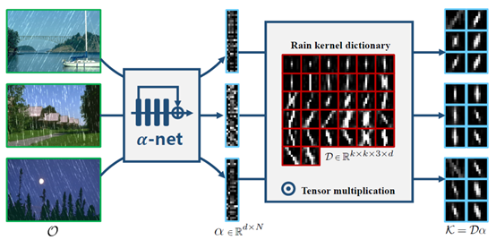 |
RCDNet: An Interpretable Rain Convolutional Dictionary Network for Single Image Deraining |
| 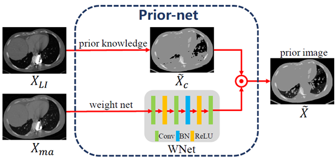 |
InDuDoNet+: A Deep Unfolding Dual Domain Network for Metal Artifact Reduction in CT Images |
 |
ClassFormer: Exploring Class-aware Dependency with Transformer for Medical Image Segmentation |
| 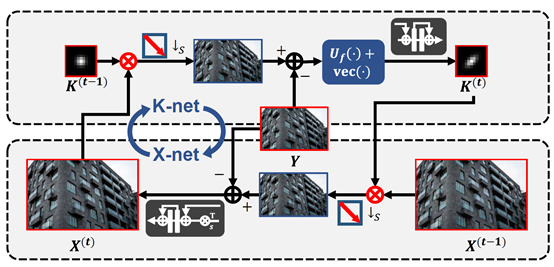 |
KXNet: A Model-Driven Deep Neural Network for Blind Super-Resolution |
| 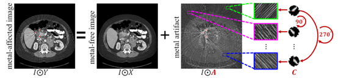 |
Orientation-Shared Convolution Representation for CT Metal Artifact Learning |
| 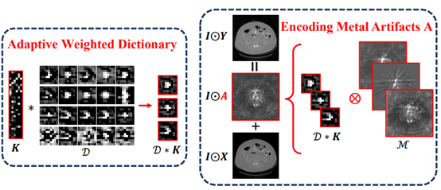 |
Adaptive Convolutional Dictionary Network for CT Metal Artifact Reduction |
| 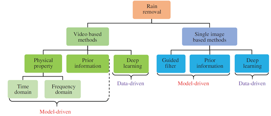 |
Survey on Rain Removal From Videos or A Single Image |
| 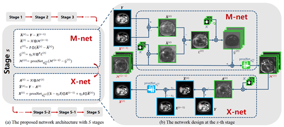 |
DICDNet: Deep Interpretable Convolutional Dictionary Network for Metal Artifact Reduction in CT Images |
| 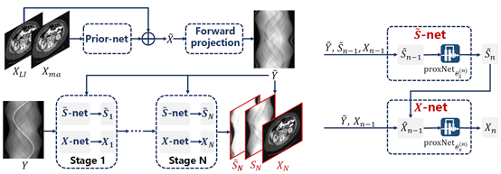 |
InDuDoNet: An Interpretable Dual Domain Network for CT Metal Artifact Reduction |
| 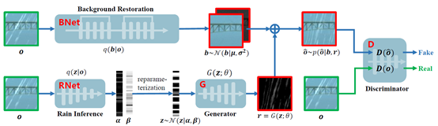 |
From Rain Generation to Rain Removal |
| 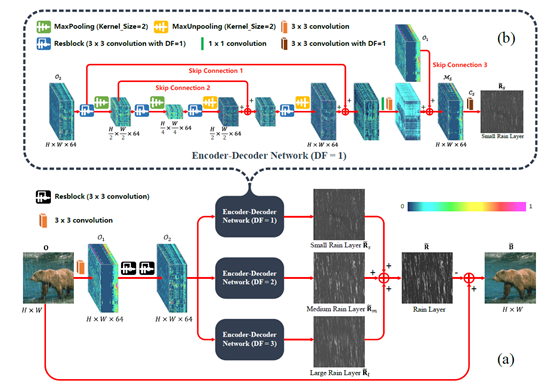 |
Structural Residual Learning for Single Image Rain Removal |
 |
Low-light Image Enhancement by Retinex Based Algorithm Unrolling and Adjustment |
| 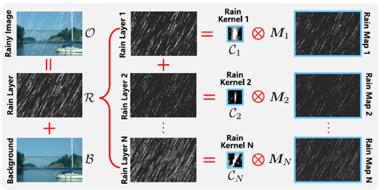 |
A Model-driven Deep Neural Network for Single Image Rain Removal |
| 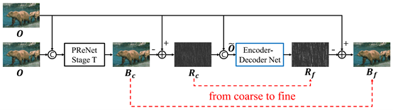 |
Single Image Rain Streaks Removal: A Review and An Exploration |
| 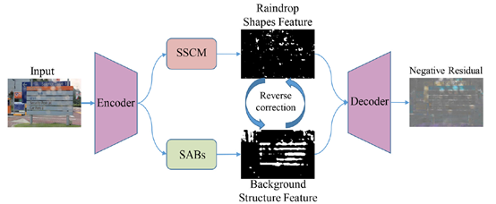 |
Selective Generative Adversarial Network for Raindrop Removal From A Single Image |